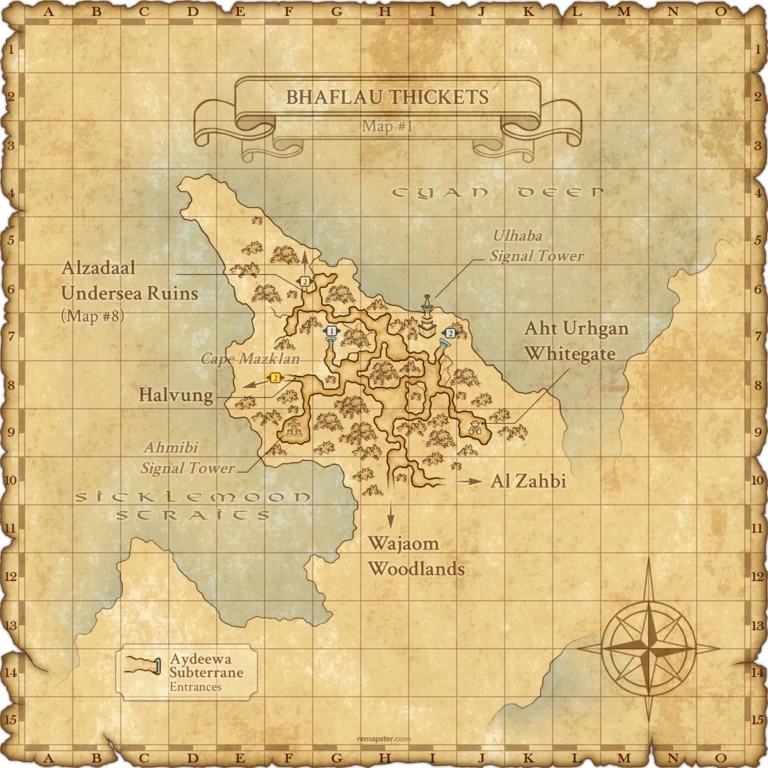
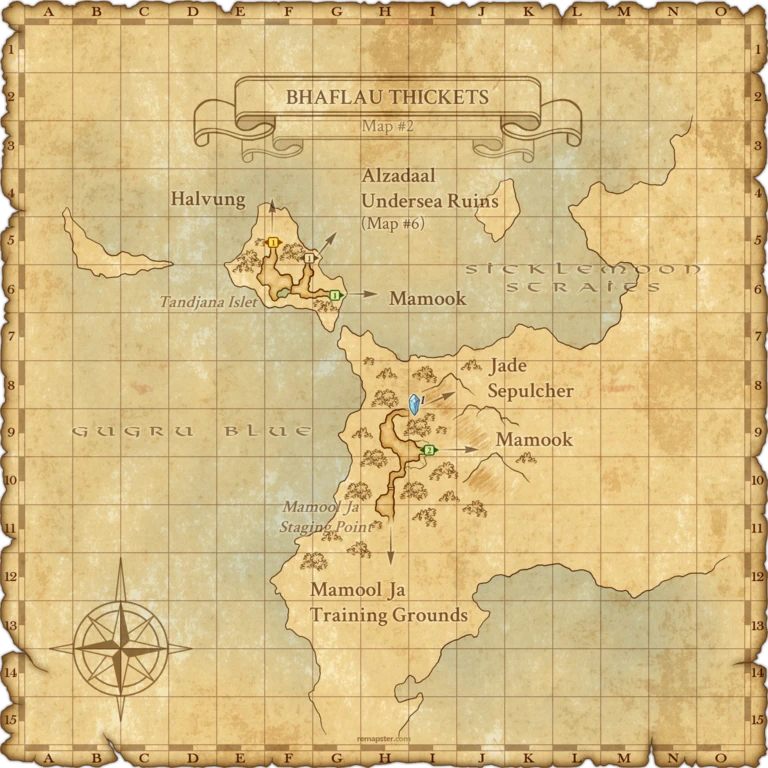

Before you begin
- Complete ToAU 28: Bastion of Knowledge.
Starting point
Ornamental Door · Jade Sepulcher
Walkthrough
- Use a Runic Portal Use Permit to travel to Mamool Ja Staging Point. Leave its outer gate and go north to the Jade Sepulcher entrance at Bhaflau Thickets H-8, on the staging-point map.
- If the staging point is not registered, reach this side of Bhaflau Thickets through Mamook.
- In Jade Sepulcher, examine the Ornamental Door for a scene. Examine it again and choose Puppet in Peril.
- Defeat Lancelord Gaheel Ja within 30 minutes and finish the victory scene.
Battle and progress notes
- Use a normal travel permit, not an active Assault Order, when you need to leave a staging point through its outer gate.
- Native battlefield: Trusts allowed, maximum six participants. The source notes missing boss dialogue and potentially incomplete additional mechanics.
Completion and reward
No item reward.
What this opens
- ToAU 30: Prevalence of Pirates
Area maps
Open a zone below, then select a map to enlarge it. Match the named floors and grid coordinates in the steps; these are reference area maps, not a live position tracker.
Bhaflau Thickets






Mamook


Zone guides
References
Steps are an original summary of the linked walkthrough and reviewed source. Other servers’ bonus rewards are not included. How to read requirements, waits and battlefield notes.